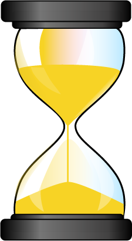

TiConf Amsterdam - Claire Coloma - June 29th, 2014
TiConf Amsterdam - Claire Coloma - June 29th, 2014

There is a process that makes us waste much of time : building the application and when we launch a build it's like :
1 build  15 sec
100 builds 125 min per week
One build takes about 15 seconds to run an application. If you make 100 builds a day and work 5 days on it, you have lost 125 min of your life, per week.
1 build 5 sec
You can save : 83 min
≈ 4 episodes of New Girl

Just with TiShadow you will save every week about 83 min, the time to watch 4 episodes of New Girl.

TiShadow provides Titanium developers the ability to deploy apps, run tests or execute code snippets live across all running iOS and Android devices.
The command $ tishadow run compress the resources of your application (in zip format) and send them to the tishadow server.
Then this one distribute this package to all tishadow apps connected using websocket returning information to the cli
These apps extract contents of the package and execute the code
$ npm install -g tishadow$ mkdir ~/tishadowapp
$ tishadow app -d ~/tishadowapp$ tishadow server
$ cd ~/tishadowapp
$ ti build -p android -T deviceEnter your IP address
Then, launch your application:$ tishadow run$ ti build -p ios --shadow
$ tishadow clear$ tishadow screenshot$ tishadow server --screenshot-path [path]$ tishadow specClear the application cache on all connected devices
Capture screenshots, that's so cool, when you want to makes screenshots for app store or play store, you make them one time and not for each device
by default theses captures are stock in your temporary file, but you can choose the path destination when you launch the server with this command:
spec launch jasmine test by default
Launch the REPL (Read Eval Pint Loop) that permit you to code directly in the command line
TiShadow also provide an editor where you can put your code and press the button "execute" to deploy the code snippet to all connected devices.
Automate the compilations of:
the most famous JavaScript preprocessor, that make your script more readable as well as maintenable
JavaScript
CoffeeScript
" ; " -> semicolons ; "{ }" -> curly braces
var doClick = function(e) {
return console.log(e.index);
};doClick = (e) ->
console.log(e.index)if (typeof joli !== "undefined" && joli == null) {
alert("Hello");
}alert "Hello" if joli?Indeed, Coffee is Syntactically significant whitespace so no need semicolon or braces
var math;
math = {
square: function(x) {
return Math.sqrt(x);
},
cube: function(x) {
return x * square(x);
}
};
alert("Three cubed is " + (math.cube(3)));math =
square: (x) -> Math.sqrt x
cube: (x) -> x * square x
alert "Three cubed is #{math.cube 3}"var button = Titanium.UI.createButton({
title: 'Hello',
top: 10,
width: 100,
height: 50
});button = Titanium.UI.createButton
title: 'Hello'
top: 10
width: 100
height: 50button.addEventListener('click', function {
Titanium.API.info("You clicked the button");
});button.addEventListener 'click', () ->
Titanium.API.info "You clicked the button"$ coffee --compile --output js/ chocolate.coffee$ coffee --compile --output js/ coffeedir/$ coffee --watch --compile chocolate.coffee
Jade is an another way to code xml, even more, with jade you can use Variables, Conditions code, Switch case, loop, etc.
ul
li Item A
li Item B
li Item C<ul>
<li>Item A</li>
<li>Item B</li>
<li>Item C</li>
</ul>Jade is like CoffeeScript: syntactically significant whitespace, so no need tags, just need to nest your code
ul
each val, index in {1:'one',2:'two',3:'three'}
li= index + ': ' + val<ul>
<li>1: one</li>
<li>2: two</li>
<li>3: three</li>
</ul>$ jade {file1,file2}.jade$ jade dir1 dir2 --out /views
@primary-color: #f7d325;
@secondary-color: rgb(75,134,194);
"p": {
color: @primary-color
}
"a": {
color: @secondary-color
}
".progressbar" {
color: @secondary-color
}"p": {
color: #f7d325
}
"a": {
color: rgb(75,134,194)
}
".progressbar" {
color: rgb(75,134,194)
}.error(@borderWidth: 2px) {
border: @borderWidth solid #F00;
color: #F00;
}
".generic-error" {
padding: 20px;
margin: 4px;
.error();
}
".login-error" {
left: 12px;
position: absolute;
top: 20px;
.error(5px);
}".generic-error" {
padding: 20px;
margin: 4px;
border: 2px solid #F00;
color: #F00;
}
".login-error" {
left: 12px;
position: absolute;
border: 5px solid #F00;
color: #F00;
}$ npm install -g ltss$ ltss [filename.ltss] [filename.tss]Grunt is a task runner, and you can launch task automaticallly, that permit you in this case to automatically compile your files
$ npm install grunt
$ npm install -g grunt-cli
{
"name": "My badass project",
"description": "Poney and hearts everywhere"
"version": "0.0.1",
"author": "Claire COLOMA",
},
"dependencies": {
"grunt": "~0.4.5"
},
"devDependencies": {
"grunt-ltss": "~0.1.2",
"grunt-contrib-coffee": "~0.10.1",
"grunt-tishadow": "dbankier/grunt-tishadow",
"grunt-contrib-watch": "~0.6.1",
"load-grunt-tasks": "~0.6.0"
}
}module.exports = (grunt) ->
# Import grunt plugins
grunt.loadNpmTasks 'grunt-plugin'
# Configure plugins
grunt.initConfig()
# Register tasks
grunt.registerTask 'default', ['tache1', 'tache2']grunt.loadNpmTasks 'grunt-img'
grunt.loadNpmTasks 'grunt-ltss'
grunt.loadNpmTasks 'grunt-contrib-coffee'
grunt.loadNpmTasks 'grunt-contrib-watch'
grunt.loadNpmTasks 'grunt-tishadow' require('load-grunt-tasks')(grunt)module.exports = (grunt) ->
img:
do:
src: 'app/assets/images'
coffee:
options:
bare:true
compile:
files: [
expand: true
src: ["**/*.coffee"]
cwd: "app/coffee"
dest: "app"
ext: ".js"
]ltss:
compile:
files: [
expand: true
cwd: "app/ltss"
dest: "app/styles"
src: ["**/*.ltss", "!**/includes/**"]
ext: ".tss"
]tishadow:
run:
command: 'run'
run_ios:
command: 'run'
options:
platform: 'ios'
run_android:
command: 'run'
options:
platform: 'android'watch:
ios:
files: ["app/**/*.xml", "app/**/*.ltss", "app/**/*.coffee"]
tasks: ['compile', 'tishadow:run_ios']
android:
files: ["app/**/*.xml", "app/**/*.ltss", "app/**/*.coffee"]
tasks: ['compile', 'tishadow:run_android']
all:
files: ["app/**/*.xml", "app/**/*.ltss", "app/**/*.coffee"]
tasks: ['compile', 'tishadow:run']grunt.registerTask 'build', ['ltss', 'coffee']
grunt.registerTask 'default', ['build', 'tishadow:run', 'watch:all']
grunt.registerTask 'ios', ['build', 'tishadow:run_ios', 'watch:ios']
grunt.registerTask 'android', ['build', 'tishadow:run_android', 'watch:android']$ grunt [task-name]Need at least the default task